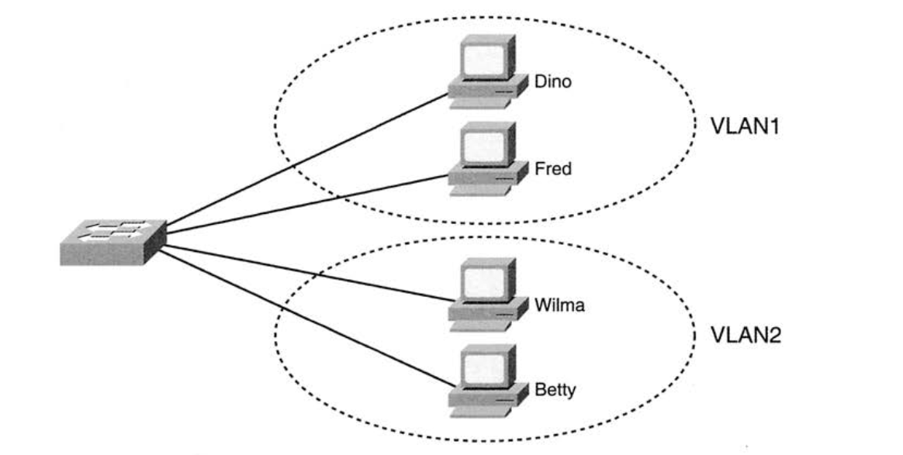
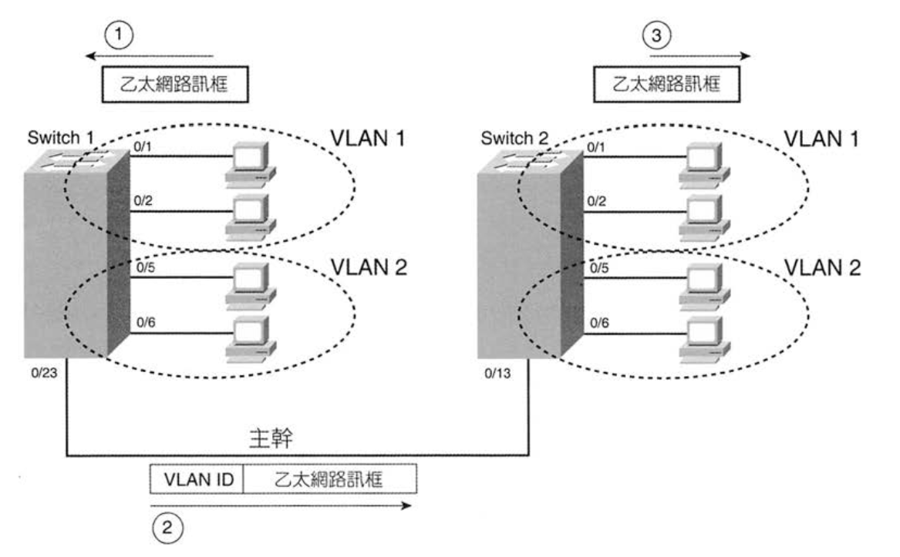
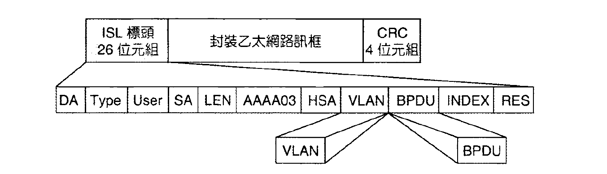
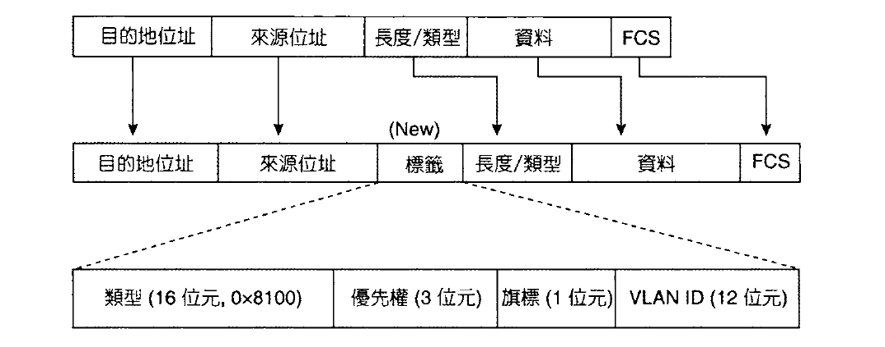
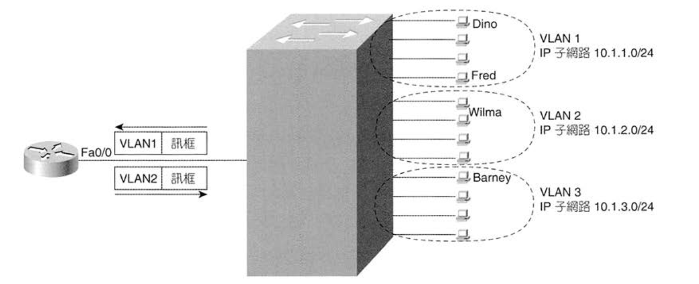

區域網路中的所有網路設備都在同樣的廣播領域中，也就是說當這些設備送出一個廣播封包時，在廣播領域中的其他設備也都會收到這個廣播。
如果沒有 VLAN，Switch 就會將它所有的介面視為相同的廣播網域。有了 VLAN 後，就能將特定的介面設定在同一個廣播領域中，這時在同一個 Switch 就會有多個廣播領域產生。

現在考慮一個問題：如果要在不同 Switch 中用相同的 VLAN 怎麼辦？在兩個 Switch 相連的 Interface 上要設定什麼 VLAN？
為了解決這個問題，便需要使用 Trunk link。目前主流的網路傳輸標準有 Cisco 制定的 ISL，及 IEEE 802.1Q。這些標準的原理是透過在傳送的訊框中加上 VLAN 標頭 (包含VLAN ID)，讓 Trunk 接收端的 Switch 能夠知道訊框是來自哪個 VLAN，這時接收端的 Switch 就能將訊框轉送到相應的 VLAN 中。

ISL 將原始的乙太網路訊框完整的封裝在 ISL 標頭和標尾之間，不會修改原始的乙太網路訊框，DA 與 SA 分別是傳送端和接收端 Switch 的 MAC Address。

將額外的 4 個位元組的 VLAN 標頭插入到原始訊框的標頭中。和 ISL 不同的地方在於，802.1Q 修改過的訊框仍保有和原始訊框相同的 MAC Address。
由於標頭變長的緣故，封裝時會強制乙太網路訊框標尾的原始訊框檢查碼(FCS, Frame Check Sequence)必須根據整個訊框的內容來重新計算。

在同一個 VLAN 的設備最好在相同的 Subnet 下，如果一個 VLAN 有包含多個 Subnet，表示不同 Subnet 間可以不用上 Router 或 Firewall 就可以進行溝通，可能會有安全性的疑慮，除此之外也會造成更多廣播的流量。
